Capitulo 3
-Noção de função
192
Leonardo e Isabel estão noivos e desejam se casar em breve. Antes, porém, eles pretendem construir uma casa para morar. Para isso, foram a um loteamento onde havia apenas três terrenos disponíveis para venda.
|
Terreno |
Dimensões |
Área |
Valor |
|
3 |
13 m × 40 m |
520 m2 |
R$ 130.000,00 |
|
7 |
12 m × 40 m |
480 m2 |
R$ 120.000,00 |
|
9 |
14 m × 42 m |
588 m2 |
R$ 147.000,00 |
- Com base nas informações da tabela, troque ideias com um colega e
respondam às seguintes questões no caderno.
- Por que os terrenos têm valores diferentes?
- Qual é o preço do metro quadrado dos terrenos?
O preço e a área são as duas grandezas envolvidas nessa situação. Podemos perceber que o preço do terreno tem uma relação de dependência com sua área. Assim, o valor do preço do terreno está em função da sua área. Em que:
- o preço é a grandeza dependente (a qual será representada por y);
- a área é a grandeza independente (a qual será representada por x).
Representando essa situação em linguagem matemática, temos:
y = 250x
O preço (y) está em função do valor da área (x). Assim, y = 250x é a lei de formação dessa função.
193
Observe outra situação a seguir.
Fernanda chamou um táxi para levá-la até o aeroporto. Ao entrar no automóvel, o motorista ligou o taxímetro, que iniciou a bandeirada com um valor de R$ 3,50.
Quanto custa a corrida de táxi?
Custa 3 reais e 50 centavos a bandeirada mais 2 reais por quilômetro rodado.
- Em relação a essa situação, troque ideias com seu colega e respondam às seguintes
questões no caderno.
- Sabendo-se que o aeroporto fica a 13 km de distância do ponto em que Fernanda entrou no táxi, quanto ela pagará pela corrida?
- Como o caminho para o aeroporto estava muito congestionado, o motorista sugeriu a ela um percurso alternativo, o qual era 6 km mais longo. Nesse caso, qual foi o preço da corrida?
- Houve alguma alteração no preço da corrida quando o percurso foi alterado? Por quê?
O preço e a quantidade de quilômetros percorridos são as grandezas envolvidas nessa situação. Podemos perceber, nesse caso, que o preço da corrida tem uma relação de dependência com o total de quilômetros rodados. Assim, temos que o valor da corrida está em função da distância percorrida. Em que:
- o preço é a grandeza dependente (o qual será representado por y);
- a distância percorrida em quilômetros é a grandeza independente (a qual será representada por x).
Vamos representar em uma tabela alguns valores a serem pagos em função da distância percorrida. Observe:
|
Distância percorrida (km) |
Valor a ser pago (R$) |
|
2 |
3,50 + 2 . 2 = 7,50 |
|
4 |
3,50 + 2 . 4 = 11,50 |
|
9 |
3,50 + 2 . 9 = 21,50 |
|
13 |
3,50 + 2 . 13 = 29,50 |
|
19 |
3,50 + 2 . 19 = 41,50 |
O preço (y) está em função da distância (x) percorrida em quilômetros.
Assim, y = 3,50 + 2x é a lei de formação dessa função.
194
Outra forma de representar os dados da tabela é por meio de diagramas. Observe:
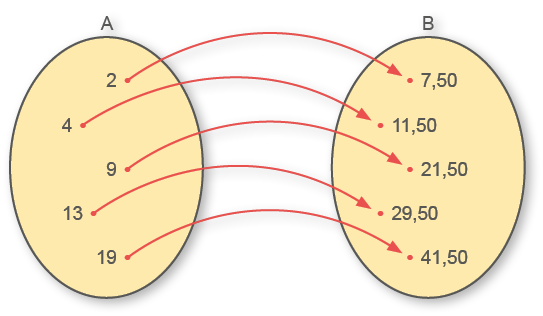
No conjunto A, temos os valores que correspondem à distância percorrida. No conjunto B, os respectivos valores a serem pagos de acordo com a distância percorrida. Nesse caso, temos uma função de A em B que representamos por:
f: A -> B (lê-se: f é uma função de A em B)
Por meio da lei de formação, podemos atribuir valores para x e encontrar o valor de y correspondente, obtendo assim um par ordenado.
|
x |
y |
Par ordenado (x; y) |
|
2 |
7,50 |
(2; 7,50) |
|
4 |
11,50 |
(4; 11,50) |
|
9 |
21,50 |
(9; 21,50) |
|
13 |
29,50 |
(13; 29,50) |
|
19 |
41,50 |
(19; 41,50) |
Dados dois conjuntos A e B, não vazios, denomina-se f: A -> B a relaçãoem que a cada elemento x pertencente a A correspondente a um único elemento y pertencente B. Dessa forma, y é uma função de x, ou seja, podemos escrever
195
Observe alguns exemplos onde as situações apresentadas não representam uma função.
-
a)
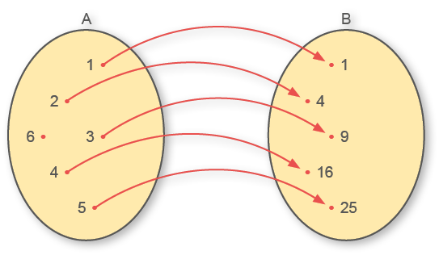
A situação apresentada não representa uma função, pois há um elemento (x) no conjunto A que não possui elemento (y) correspondente no conjunto B.
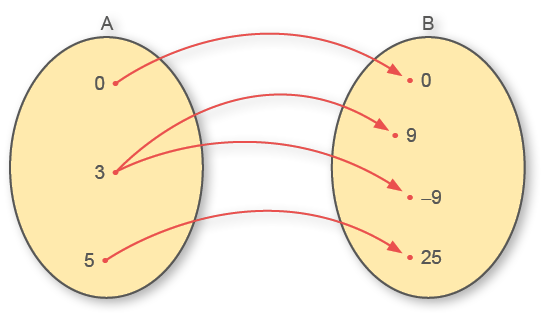
A situação apresentada não representa uma função, pois há dois valores de y em B para um único valor de x em A.
- Em cada situação a seguir, identifique a variável dependente (y), a variável
independente (x) e a lei de formação da função.
- O valor total a ser pago ao estacionamento de um shopping que cobra R$ 4,00 pela 1.ª hora e R$ 1,80 para cada hora adicional.
- A receita total mensal da venda de um produto que custa R$ 13,60.
- O salário do vendedor de uma concessionária que recebe valor fixo de R$ 1.200,00 mais 12% do valor total do que vendeu no mês.
- O perímetro de um triângulo equilátero.
- O perímetro de um quadrado.
- A medida do raio de uma circunferência em relação ao seu comprimento.
196
A companhia de água e esgoto de uma cidade cobra um valor fixo de R$ 15,00 pelo sistema de esgoto e R$ 1,20 por metro cúbico de água consumida.
- Qual é o valor a ser pago por uma pessoa que consumiu 24 m3 em um mês?
- Qual será o valor a ser pago caso o consumo mensal de água seja igual a 33 m3?
- Qual é a lei de formação da função que determina o valor a ser pago pelo consumidor?
Observe a tabela de preço para alugar de um barco para passeio.
|
Tempo |
Valor |
|
Até 1 hora |
R$ 30,00 |
|
2 horas |
R$ 50,00 |
|
3 horas |
R$ 70,00 |
|
4 horas |
R$ 90,00 |
|
5 horas |
R$ 110,00 |
- Qual é a lei de formação da função usada para calcular o valor do aluguel desse barco em relação ao tempo?
- Qual seria o valor referente ao aluguel do barco por um período de 8 horas?
- 4. Qual é a lei de formação da função que determina a área do retângulo abaixo?
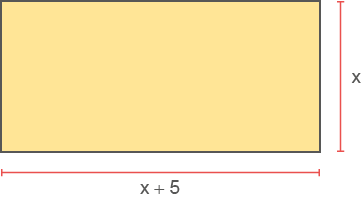
5. Um carro mantém uma velocidade constante de 80 km/h. Copie a tabela a seguir em seu caderno, completando-a, e depois faça o que se pede.
|
Tempo (t) |
0,5 |
1 |
1,5 |
2 |
3 |
7 |
|
Distância (d) (em quilômetros) |
80 |
- Quais são as grandezas relacionadas na situação apresentada?
- Escreva a lei de formação que permite calcular a distância (d) percorrida em função do tempo (t).
- o custo de produção para 100 unidades de produto;
- o custo de produção para 250 unidades de produto;
- a quantidade de unidades produzidas sabendo que o custo total foi de R$ 2.830,00.
6. O custo de produção de um determinado produto é composto por um valor fixo de R$ 150,00 mensais e um valor que depende da quantidade produzida. Sabendo que o valor de produção de cada produto é igual a R$ 8,00, escreva a lei de formação da função que nos permite calcular o custo total y na produção de x unidades e determine:
7. Uma pedra é lançada do solo descrevendo uma curva de acordo com a função h = 8t - t2, em que h representa a altura atingida pela pedra, em metros, e t o tempo, em segundos, que essa pedra levou para atingir a altura h. Determine a altura atingida por essa pedra após 3 s.
197
Gráficos de funções
Os gráficos podem nos auxiliar a analisar a variação das grandezas em determinadas situações.
O gráfico a seguir representa o valor a ser pago pelo estacionamento de um automóvel em função do tempo de permanência no local. As frações de horas são cobradas de forma proporcional.
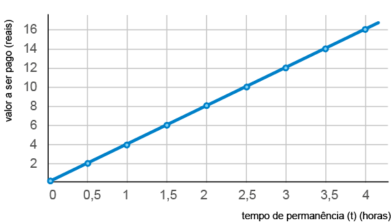
- Troque ideias com um colega e, analisando o gráfico, respondam às
questões a seguir no caderno.
- Qual é o valor a ser pago por um automóvel que permaneceu nesse estacionamento por 2 horas?
- Qual é o valor a ser pago por um automóvel que permaneceu nesse estacionamento por 3 horas e meia?
- Caso uma pessoa deixe o seu carro por 8 horas nesse estacionamento, qual será o valor a ser pago ao fim desse período?
- Qual é a lei de formação que nos fornece o valor a ser pago (v) em função do tempo (t) de permanência?
Observe outra situação.
Uma pedra é lançada do solo para cima e descreve a curva representada no gráfico a seguir.
198
2. Troque ideias com um colega e respondam no caderno:
- Qual é a altura máxima atingida pela pedra?
- Qual é o tempo que a pedra leva para atingir a altura máxima?
- A pedra atinge uma altura de 60 metros em dois momentos. Quais seriam esses momentos e o tempo de cada um?
- Quanto tempo a pedra leva para atingir o solo?
Construção de gráficos de funções
Vamos verificar agora como construir o gráfico que representa uma função dada.
Situação 1
Sendo x um número real, construa um gráfico para a função y = 3x - 2.
Inicialmente, vamos construir uma tabela e atribuir valores para x, que serão escolhidos de forma arbitrária dentro do conjunto dos números reais. Dessa forma, obteremos os respectivos valores de y pela função dada.
O gráfico será representado pelo conjunto de todos os pares ordenados (x, y), com e y = 3x - 2 no plano cartesiano.
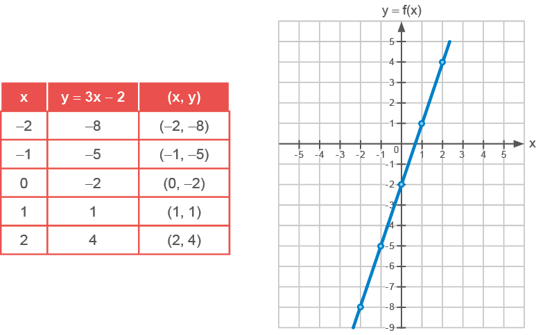
Após encontrar os pares ordenados, devemos marcar os pontos encontrados no plano cartesiano e uni-los.
Note que o gráfico que representa a função é uma reta. A reta que representa essa função é formada por infinitos pares ordenados, pois x pode ser qualquer número real.
199
No ponto em y = 0, temos que x =
Situação 2
Sendo x um número real, construa um gráfico para a função y = x2 - 2x - 3.
Inicialmente, vamos construir uma tabela, atribuindo valores para x e calculando o y correspondente pela função dada.
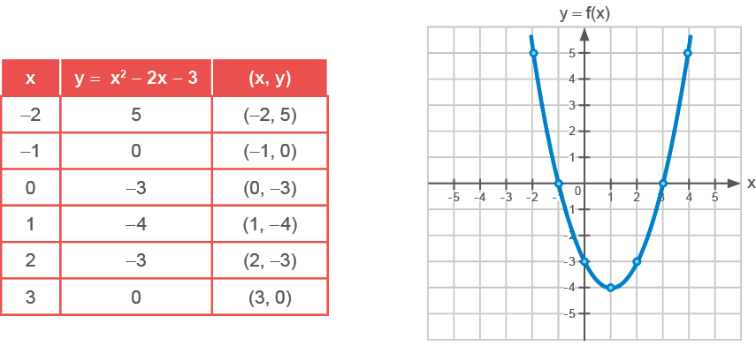
Observe que o gráfico da função não é representado por uma reta. A curva que representa essa função denomina-se parábola.
Nesse caso, a função apresenta como zeros da função x = -1 e x = 3, que são os pontos da parábola em que y = 0.
- Utilizando uma folha de papel quadriculado ou papel milimetrado,
construa o gráfico de cada uma das funções abaixo e, em seguida, determine os zeros das funções em
cada
caso, se existir.
- y = 3x
- y = x - 2
- y = -x + 4
- y = x2 + 2x - 1
- y = x2 + 2x
- y = -x2 + x - 1
- A representação gráfica da função
y = x + 5 é:- uma parábola;
- uma reta que intersecta os dois eixos;
- uma reta perpendicular ao eixo das abcissas;
- uma reta perpendicular ao eixo das ordenadas.
200
- Quantas horas esse funcionário trabalhou nesse mês?
- Qual foi o valor do salário recebido?
- Qual é o valor fixo que compõe o salário dos funcionários temporários?
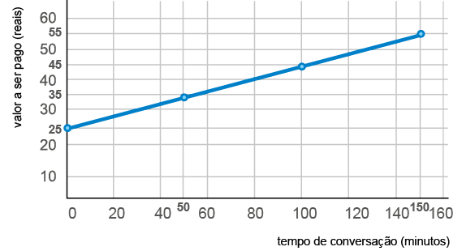
De acordo com o gráfico, responda:
- Qual é o valor da assinatura fixa mensal?
- Quantos minutos de conversação Marcelo usou nesse mês?
- Qual foi o valor da conta de telefone de Marcelo nesse mês?
- Qual é a lei de formação que nos permite calcular o valor a ser pago em função dos minutos conversados?
De acordo com o gráfico, responda:
- Qual era a população inicial dessa cidade?
- Após 6 décadas, qual era a população aproximada dessa cidade?
- Após 10 décadas, a população dessa cidade era maior ou menor que 120 000 habitantes?
201
Dos gráficos a seguir, o que representa o preço m pago em reais pela compra de n quilogramas desse produto é:
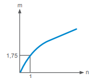
b)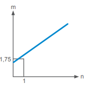
c)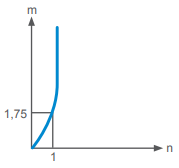
d)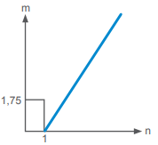
e)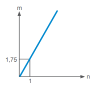
Função afim
Um automóvel, com velocidade constante, percorre 90 km a cada uma hora.
- Troque ideias com um colega e resolvam as questões a seguir.
- Copiem o quadro no caderno e completem com a distância a ser percorrida em função do tempo dado.
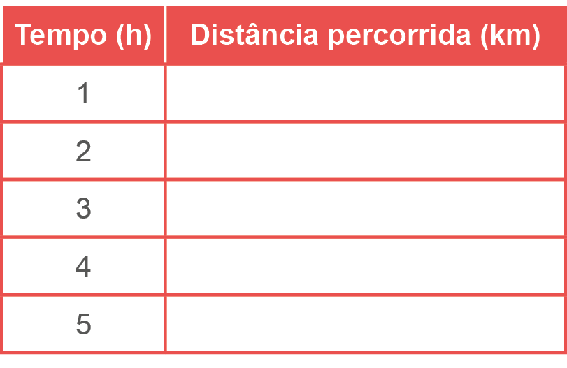
202
- Qual é a lei de formação que representa a distância percorrida em função do tempo dado?
- Utilizando um papel quadriculado ou papel milimetrado, representem o gráfico dessa função.
O gráfico que vocês construíram representa a distância percorrida em função do tempo. A função que relaciona a distância percorrida em função do tempo é um exemplo de função afim.
Denominamos de função afim toda função que pode ser escrita na forma y = ax + b, sendp a e b números reais.
Em uma função afim, x pode assumir qualquer número real e o gráfico dessa função é uma reta, sendo que a corresponde ao coeficiente de x e b é o termo independente.
Veja alguns exemplos de funções afins:
- y = 7x (a = 7 e b = 0)
- y = -9x + 11 (a = -9 e b = 11)
- y = 3x - 4 (a = 3 e b = -4)
Análise e construção do gráfico de uma função afim
Situação 1
Dado y = x + 3, com 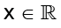, vamos construir o gráfico dessa função e analisá-lo.
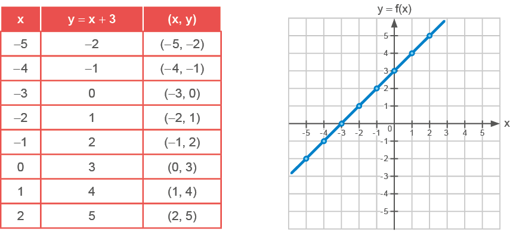
203
Análise do gráfico
- O gráfico que representa a função afim y = x + 3 é uma reta.
- Para y = 0, temos que x = -3.
- Para y > 0, temos que x > -3.
- Para y < 0, temos que x < -3.
- Nessa função a = 1, ou seja, a > 0.
- Em uma função afim, y = ax + b, se a > 0, a função é denominada função crescente.
- A ordenada do ponto em que a reta intersecta o eixo das ordenadas é igual ao termo independente da função, ou seja, igual a 3.
- -3 é o zero da função.
Situação 2
Dada a função y = -x + 2, com , vamos construir o gráfico dessa função e analisá-lo.
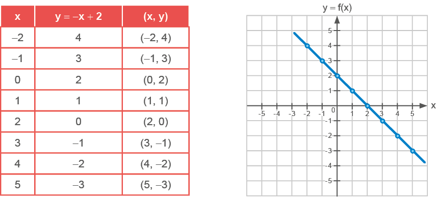
Análise do gráfico
- O gráfico que representa a função afim y = -x + 2 é uma reta.
- Para y = 0, temos que x = 2.
- Para y > 0, temos que x < 2.
- Para y < 0, temos que x > 2.
- Nessa função a = -1, ou seja, a < 0.
- Em uma função afim, y = ax + b, se a < 0, a função é denominada função decrescente.
- A ordenada do ponto em que a reta intersecta o eixo das ordenadas é igual ao termo independente da função, ou seja, igual a 2.
- 2 é o zero da função.
204
- O custo de produção de um produto é determinado por um valor fixo de R$ 80,00 mais
um
custo de R$ 5,00 por unidade produzida.
- Escreva a lei de formação que representa o custo total y em função da produção de x unidades.
- Qual é o custo total para se produzir 45 unidades desse produto?
- Determine a quantidade de unidades produzidas, sendo que foram gastos R$ 510,00 na produção dessas unidades.
- Dada a função y = 3x - 12, determine:
- o valor de x para que se tenha y = 33.
- o valor de y para x = 13.
- Um fabricante de peças de gesso vende a unidade por R$ 12,00. O custo total de
produção
dessas peças consiste em um valor fixo de R$ 50,00 mais
R$ 3,00 por unidade produzida.- Escreva a função que representa a receita desse fabricante.
- Escreva a função que representa o custo total de peças fabricadas.
- Sabendo que o lucro é dado pela receita menos o custo de produção, escreva a função que representa o lucro desse fabricante.
- Se esse fabricante vender 100 peças de gesso, ele terá lucro ou prejuízo?
- Quantas peças de gesso esse fabricante precisa vender para ter um lucro de R$ 1.525,00?
- Construa os gráficos das funções a seguir, sendo , e faça a
análise de
cada um deles.
- y = -3x
- y = x + 4
- y = 2x - 3
- y = -3x + 1
- Sem construir o gráfico das funções, identifique se as funções a seguir são
crescentes
ou decrescentes.
- y = -6x
- y = -8x + 9
- y = 11x - 5
- 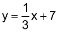
- Sem construir o gráfico das funções, determine as coordenadas dos pontos em que o
gráfico intersecta o eixo das abscissas e o eixo das ordenadas.
- y = x - 8
- y = -16x + 32
- y = 11x
- y = -x - 13
- No gráfico a seguir temos representada a distância (d), em metros, percorrida por um atleta em função do tempo (t), em minutos.
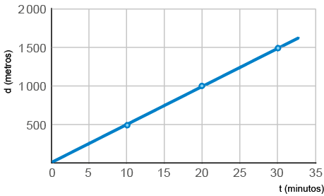
- De acordo com o gráfico, quantos metros este atleta correu após 10 minutos?
- Quanto tempo ele levou para percorrer 1 500 m?
- Se ele mantiver a velocidade constante, qual será o tempo que ele levará para percorrer 2 000 m?
- Após 1 hora, qual será a distância percorrida por este atleta?
205
Função quadrática
Observe o quadrilátero a seguir:
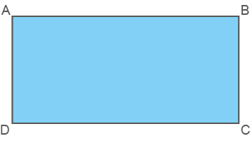
Esse quadrilátero possui duas diagonais.
O número de diagonais (d) de um polígono qualquer pode ser calculado em função do número (n) de lados desse polígono, veja:
d(n) = =
Como exemplo, vamos calcular o número de diagonais de um octógono.
d(8) = = = = 20
O octógono é um polígono que possui 20 diagonais.
Esse processo utilizado para calcular o número de diagonais em função do número de lados de um polígono é um exemplo de função quadrática.
Denominamos de função quadrática toda função que pode ser escrita na forma y = ax² + bx + c, sendo a, b e c números reais e a ≠ 0
Em uma função quadrática, x pode assumir qualquer número real e o gráfico dessa função é uma parábola, sendo que a e b correspondem aos coeficientes de x2 e x, respectivamente, e c é o termo independente.
Veja alguns exemplos de funções quadráticas:
- y = 8x2 (a = 8, b = 0 e c = 0)
- y = -4x2 + 13 (a = -4, b = 0 e c = 13)
- y = 2x2 - 4x + 1 (a = 2, b = -4 e c = 1)
206
Análise e construção do gráfico de uma função quadrática
Situação 1
Dada a função y = -x2 + 2x + 3, com , vamos construir o gráfico dessa função e analisá-lo.
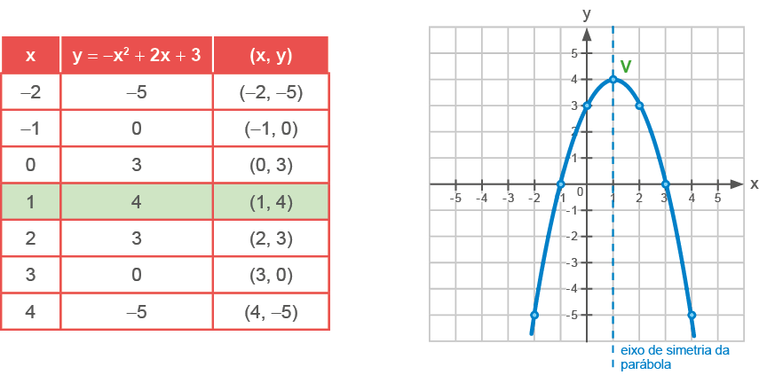
Análise do gráfico
- O gráfico que representa a função quadrática y = -x2 + 2x + 3 é uma parábola.
- Para y = 0, temos que x = -1 ou x = 3.
- Para y > 0, temos que -1 < x < 3.
- Para y < 0, temos que x < -1 e x > 3.
- Nessa função a = -1, ou seja, a < 0.
- Em uma função quadrática, y = ax2 + bx + c, se a < 0, a concavidade da parábola é voltada para baixo.
- A ordenada do ponto em que a parábola intersecta o eixo das ordenadas é igual ao termo independente da função, ou seja, igual a 3.
- -1 e 3 são os zeros da função.
- O ponto V denomina-se vértice da parábola. Podemos calcular a abscissa do vértice por meio da fórmula , observe:
O valor da ordenada do vértice da parábola pode ser obtido substituindo-se o valor de x na função dada.
y = -x2 + 2x + 3
y = -(1)2 + 2 ∙ (1) + 3
y = -1 + 2 + 3
y = 4
Portanto, as coordenadas do vértice são (1, 4).
207
Situação 2
Dada a função y = x2 - 4x, com, vamos construir o gráfico dessa função e analisá-lo.
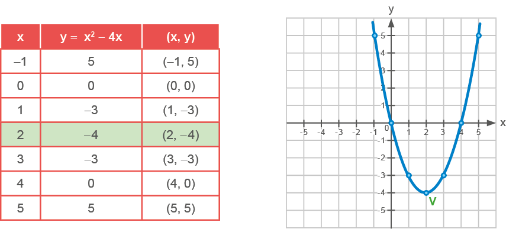
Análise do gráfico
- O gráfico que representa a função quadrática y = x2 - 4x é uma parábola.
- Para y = 0, temos que x = 0 ou x = 4.
- Para y > 0, temos que x < 0 e x > 4.
- Para y < 0, temos que 0 < x < 4.
- Nessa função a = 1, ou seja, a > 0.
- Em uma função quadrática, y = ax2 + bx + c, se a > 0, a concavidade da parábola é voltada para cima.
- A ordenada do ponto em que a parábola intersecta o eixo das ordenadas é igual ao termo independente da função, ou seja, igual a 0.
- 0 e 4 são os zeros da função.
- O ponto V denomina-se vértice da parábola. Podemos calcular a abscissa do vértice por meio da fórmula , observe:
O valor da ordenada do vértice da parábola pode ser obtido substituindo-se o valor de x na função dada.
y = x2 - 4x
y = (2)2 - 4 ∙ (2)
y = 4 - 8
y = -4
Portanto, as coordenadas do vértice são (2, -4).
208
Situação 3
Dada a função y = x2 - 2x + 5, com , vamos construir o gráfico dessa função e analisá-lo.
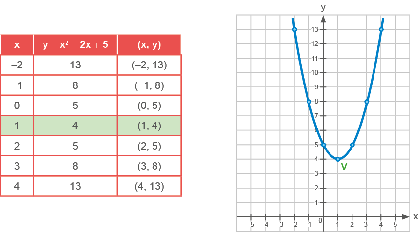
Análise do gráfico
- O gráfico que representa a função quadrática y = x2 - 2x + 5 é uma parábola.
- Como a > 0, a concavidade da parábola é voltada para cima.
- Para y = 0, não existe x real.
- y > 0, para qualquer x real.
- Para y < 0, não existe x real.
- A ordenada do ponto em que a parábola intersecta o eixo das ordenadas é igual ao termo independente da função, ou seja, igual a 5.
- Essa função não tem zeros reais.
- Cálculo do vértice da parábola:
O valor da ordenada do vértice da parábola pode ser obtido substituindo-se o valor de x na função dada.
y = x2 - 2x + 5
y = (1)2 - 2 ∙ (1) + 5
y = 1 - 2 + 5
y = 4
Portanto, as coordenadas do vértice são (1, 4).
209
Situação 4
Dada a função y = -x2 + 2x - 1, com , vamos construir o gráfico dessa função e analisá-lo.
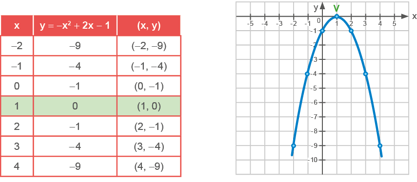
Análise do gráfico
- O gráfico que representa a função quadrática y = -x2 + 2x - 1 é uma parábola.
- Como a < 0, a concavidade da parábola é voltada para baixo.
- Para y = 0, x = 1.
- Para y > 0, não existe x real.
- Para y < 0, x ≠ 1.
- A ordenada do ponto em que a parábola intersecta o eixo das ordenadas é igual ao termo independente da função, ou seja, igual a -1.
- -1 é o zero da função.
- Cálculo do vértice da parábola:
O valor da ordenada do vértice da parábola pode ser obtido substituindo-se o valor de x na função dada.
y = -x2 + 2x - 1
y = -(1)2 + 2 ∙ (1) - 1
y = -1 + 2 - 1
y = 0
Portanto, as coordenadas do vértice são (1, 0).
210
- Nas funções quadráticas a seguir, identifique se a concavidade da parábola em cada
uma
delas é voltada para cima ou para baixo.
- y = x2 + 3
- y = -x2
- y = -x2 + 3x - 1
- y = 5x2 - x + 1
- Determine as coordenadas dos vértices das funções.
- y = -2x2
- y = x2 + 8x - 2
- y = -2x2 - 3x + 1
- y = x2 + 6x + 3
- Utilizando um papel quadriculado ou uma folha de papel milimetrado, construa os
gráficos
a seguir e analise-os.
- y = x2 - 6x + 8
- y = -x2 + 4x - 4
- y = x2 - 3x + 3
- y = x2 + 6x + 9
- y = -x2 + x
- y = -2x2
- Quais dos pontos a seguir pertencem à parábola representada pela função
y = x2 - 6x + 5?- (1, 0)
- (2, -2)
- (3, -4)
- (-1, 12)
- Interpretando gráficos
- A água consumida hoje no Brasil é retirada de rios e represas e
não
volta em curto prazo, nem com a mesma qualidade. Observe o gráfico a seguir.
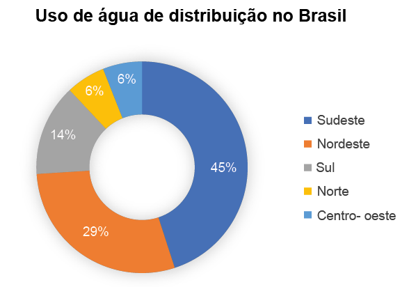 - Do que se trata o gráfico?
- De acordo com o gráfico, onde ocorre os maiores consumos de água?
211
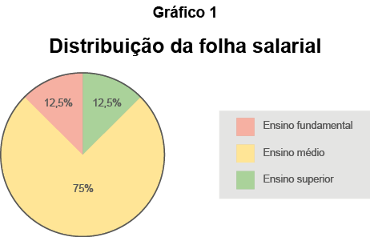
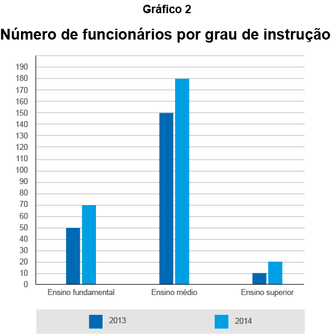
Qual deve ser o aumento na receita da empresa para que o lucro mensal em 2014 seja o mesmo de 2013?
- R$ 114.285,00
- R$ 130.000,00
- R$ 160.000,00
- R$ 210.000,00
- R$ 213.333,00
212
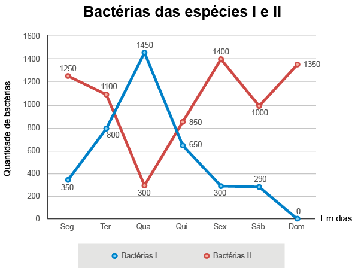
Em que dia dessa semana a quantidade total de bactérias nesse ambiente de cultura foi máxima?
- Terça-feira.
- Quarta-feira.
- Quinta-feira.
- Sexta-feira.
- Domingo.
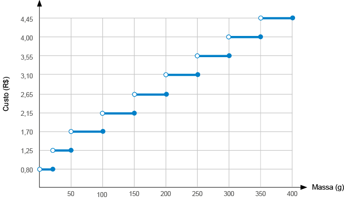
O valor total gasto, em reais, para postar essas cartas é de
- 8,35
- 12,50
- 14,40
- 15,35
- 18,05
213
- (ENEM) Uma falsa relação
O cruzamento da quantidade de horas estudadas com o desempenho no Programa Internacional de Avaliação de Estudantes (Pisa) mostra que mais tempo na escola não é garantia de nota acima da média.
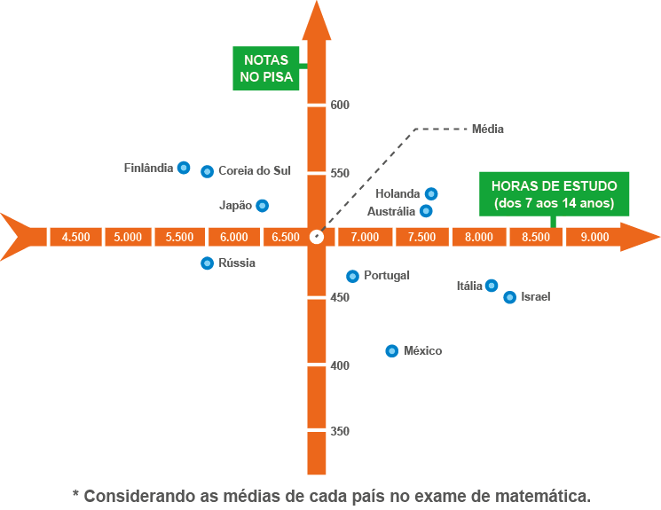
Dos países com notas abaixo da média nesse exame, aquele que apresenta maior quantidade de horas de estudo é
- Finlândia.
- Holanda.
- Israel.
- México.
- Rússia.
- (ACAFE-SC) Uma pequena fábrica de bombons trabalha com um custo
fixo
mensal de R$ 10.000,00. A fábrica produz bombons que são embalados em caixas. Cada caixa produzida
custa R$
10,00 e é vendida por R$ 25,00. Para que a fábrica tenha um lucro mensal de
R$ 8.000,00, ela deverá fabricar e vender mensalmente x caixas de bombons. O valor de x é:- 1 500
- 1 200
- 720
- 120
- 150
2. (ENEM) Nos últimos anos, a televisão tem passado por uma verdadeira revolução, em termos de qualidade de imagem, som e interatividade com o telespectador. Essa transformação se deve à conversão do sinal analógico para o sinal digital. Entretanto, muitas cidades ainda não contam com essa nova tecnologia. Buscando levar esses benefícios a três cidades, uma emissora de televisão pretende construir uma nova torre de transmissão, que envie sinal às antenas A, B e C, já existentes nessas cidades. As localizações das antenas estão representadas no plano cartesiano:
A torre deve estar situada em um local equidistante das três antenas.
O local adequado para a construção dessa torre corresponde ao ponto de coordenadas:
- (65 ; 35).
- (53 ; 30).
- (45 ; 35).
- (50 ; 20).
- (50 ; 30).
3. (ENEM) No Brasil há várias operadoras e planos de telefonia celular. Uma pessoa recebeu 5 propostas (A, B, C, D e E) de planos telefônicos. O valor mensal de cada plano está em função do tempo mensal das chamadas, conforme o gráfico.
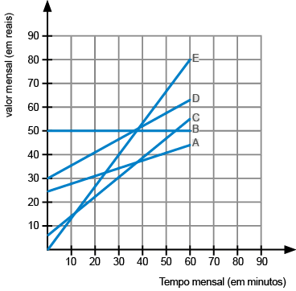
Essa pessoa pretende gastar exatamente R$ 30,00 por mês com telefone. Dos planos telefônicos apresentados, qual é o mais vantajoso, em tempo de chamada, para o gasto previsto para essa pessoa?
- A
- B
- C
- D
- E
4. (Saresp) A linha representada no sistema de eixos descreve a rota de um avião no radar. Como o avião voa em linha reta (entre as longitudes 0° e 60°), a cada grau de longitude é possível se prever a latitude em que o avião estará. Se chamarmos de x a longitude e de y a latitude, a equação que descreve a rota do avião no radar é dada por:
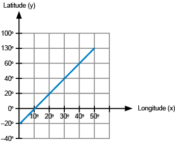
- y = 2x + 10
- y = x - 20
- y = 2x - 20
- y = 2x + 20
5. (Cefet-PB) A atleta Maurren Maggi conquistou uma medalha de ouro em Pequim, saltando 7,04 m na modalidade salto em distância. Suponha que a altura h(t) que a atleta atingiu durante o salto, em relação ao solo representado pelo eixo t, seja descrita pela função h(t) = t - 5t² , em que t é dado em segundos. Assim, o instante em que Maurren atingiria o solo, após o salto, e aquele em que atingiria a altura máxima seriam, respectivamente:
- 0,9 s e 0,45 s
- 0,45 s e 0,9 s
- 0,55 s e 0,45 s
- 0,9 s e 0,55 s
- 0,9 s e 2,4 s
6. (ENEM) A temperatura T de um forno (em graus centígrados) é reduzida por um sistema a partir do instante de seu desligamento (t = 0) e varia de acordo com a expressão T(t) = - + 400 , com t em minutos. Por motivos de segurança, a trava do forno só é liberada para abertura quando o forno atinge a temperatura de 39ºC. Qual o tempo mínimo de espera, em minutos, após se desligar o forno, para que a porta possa ser aberta?
- 19,0
- 19,8
- 20,0
- 38,0
- 39,0
7. (Saresp) Sabemos que um corpo em queda livre cai de forma que a distância (d) percorrida seja proporcional ao quadrado do tempo (t) decorrido desde o início da queda. Isto é, d = kt², (onde d é a distância percorrida, t é o tempo de queda e k é a razão constante entre d e t²). Após 3 segundos de queda, o corpo caiu 45 metros. Então, a relação entre a distância percorrida e o tempo após a queda pode ser expressa por:
- d = 2t²
- d = 4t²
- d = 5t²
- d = 6t²
8. A representação gráfica da função y = x2 - 9:
- é uma parábola com concavidade voltada para baixo;
- é uma parábola que não intersecta o eixo das abcissas;
- é uma parábola que intersecta o eixo das abcissas em dois pontos;
- é uma parábola tangente ao eixo das abcissas.